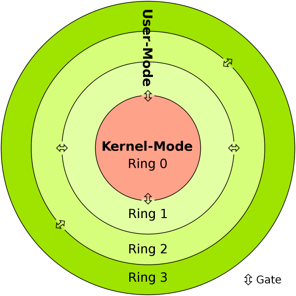
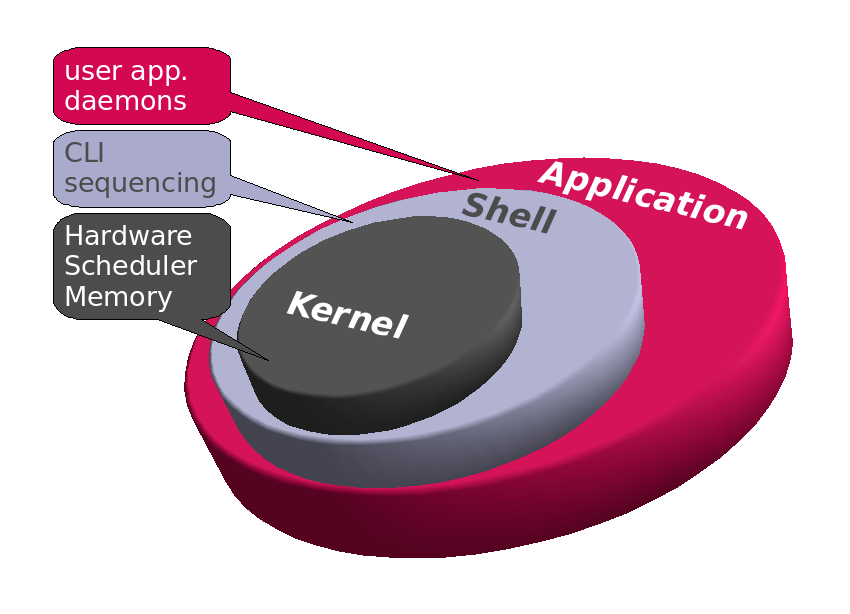

Kernel (Çekirdek)
İşletim sistemi çekirdeği, kısaca çekirdek, işletim sistemindeki her şeyin üzerinde denetimi olan merkezi bileşenidir. Uygulamalar ve donanım seviyesindeki bilgi işlemleri arasında bir köprü görevi görür. Çekirdeğin görevleri sistemin kaynaklarını yönetmeyi de kapsamaktadır.
Önemli Not: Linux bir kernel'dir os değil!


Önemli Not: Linux bir kernel'dir os değil!